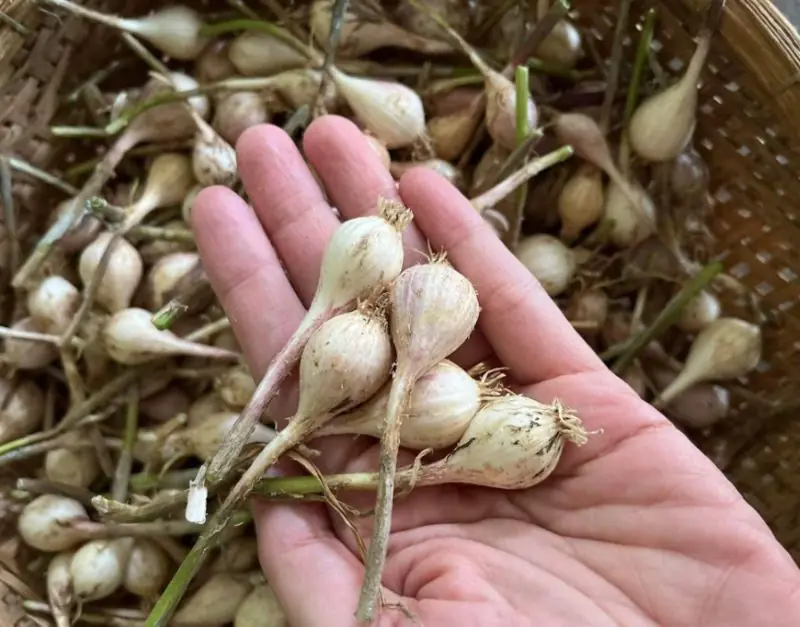
Ảnh minh họaTỏi cô đơn Lý Sơn
Mỗi củ chỉ một tép tròn. Hiếm, sản lượng mỗi năm rất ít. Vị đậm, thơm, hợp ngâm rượu, ngâm mật ong hoặc ăn sống.
Welcome to Ly Son
Đảo Lý Sơn · Quảng Ngãi
Tỏi, hành tím và hải sản khô từ hòn đảo núi lửa giữa biển miền Trung. Hàng nhà trồng và làm trên đảo, gửi về đất liền theo từng đợt.
Lý Sơn – nhà của Đạt Hành trình trải nghiệm là của bạn
Xem hành trình 3 ngày →Ảnh tham khảo · bản quyền thuộc tác giả
Sản phẩm
Giá theo mùa và theo đợt hàng. Nhắn đặt hàng để được báo giá và lịch gửi.
Ảnh tỏi, hành, hải sản, chả cá là ảnh minh họa (nguồn tham khảo internet, bản quyền thuộc tác giả). Hàng thật có thể khác về kích cỡ, màu sắc.

Ảnh minh họaMỗi củ chỉ một tép tròn. Hiếm, sản lượng mỗi năm rất ít. Vị đậm, thơm, hợp ngâm rượu, ngâm mật ong hoặc ăn sống.
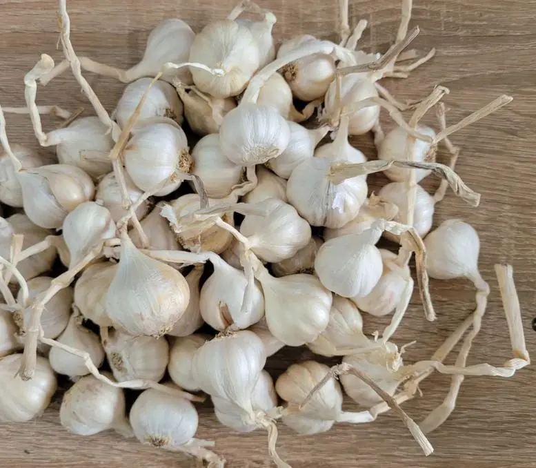
Ảnh minh họaCủ nhỏ, tép đều, vỏ trắng ngà. Dùng nấu ăn hằng ngày, phi thơm, làm nước chấm, làm tỏi ớt.
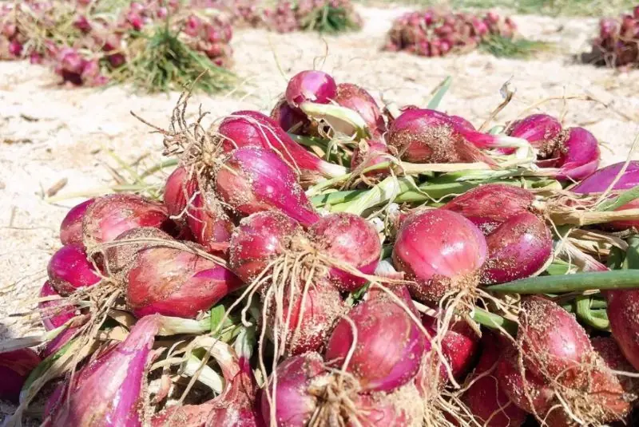
Ảnh minh họaCủ chắc, vỏ tím đỏ, mùi thơm. Hợp phi hành, làm dưa hành, ướp đồ nướng.
Hải sản tươi theo con nước, cùng mực khô, mực một nắng, cá khô và rong biển phơi trên đảo. Có đợt mới báo sau.
Chả cá thơm vị cá biển, ăn với bún nóng, chiên giòn hay kho đều hợp. Quy cách và giá báo theo đợt hàng.
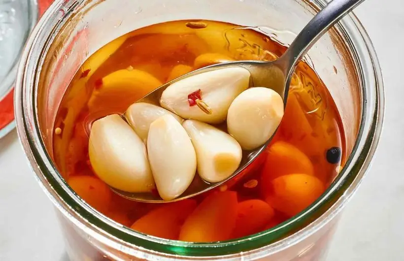
Tỏi cô đơn ngâm rượu, ngâm mật ong, tỏi ngâm chua ngọt. Làm theo đơn, cần đặt trước.
Sản phẩm chính
Tỏi cô đơn không phải một giống riêng. Trong ruộng tỏi thường, một số cây chỉ tạo một tép duy nhất. Nhiều người ăn thấy tép này thơm, vị đậm hơn tỏi nhiều tép.
Tỏi cô đơn được nhặt riêng khi thu hoạch, phơi khô rồi mới đóng túi lưới cho thoáng.
Ăn sống có vị cay ấm, hậu ngọt. Mùi thơm rõ hơn tỏi nhập khẩu củ to.
Người trên đảo quen ăn vài củ trong bữa cơm hoặc ngâm rượu để dùng dần khi trời trở lạnh. Đây là thói quen ăn uống, không phải thuốc.
Công dụng nêu trên là kinh nghiệm dân gian, không thay thế thuốc chữa bệnh. Người đang điều trị bệnh, đặc biệt đang dùng thuốc chống đông máu, nên hỏi bác sĩ trước khi dùng nhiều tỏi.
Vì sao tỏi Lý Sơn khác
Lý Sơn là đảo hình thành từ núi lửa. Bà con đào đất đỏ bazan trên núi Thới Lới, núi Giếng Tiền chở về rải lên ruộng, trộn phân chuồng, rồi phủ lớp cát san hô lấy từ biển. Lớp cát giữ ẩm, thoát nước nhanh và làm củ tỏi, củ hành chắc, thơm. Cát thay sau vài vụ, đất bazan thay sau vài năm.
Nước tưới lấy từ giếng trên đảo. Phân chủ yếu là phân chuồng ủ hoai với lá cây và rong. Mỗi năm thường chỉ có một vụ chính.
Mua đúng hàng
Trên thị trường có nhiều tỏi cô đơn trồng nơi khác nhưng ghi là Lý Sơn. Một số dấu hiệu bà con hay dùng để nhận biết (mẹo dân gian, chỉ để tham khảo; chắc nhất là mua đúng nơi trồng):
| Đặc điểm | Tỏi Lý Sơn | Tỏi nhập củ to |
|---|---|---|
| Kích thước | Củ nhỏ, chắc tay | Củ to, đều, nhẹ hơn so với kích thước |
| Vỏ | Trắng ngà, mỏng, đôi khi lẫn vết đất cát | Trắng bóng, sạch, dày hơn |
| Mùi | Thơm nồng ngay khi bóc | Mùi nhẹ hơn |
| Vị khi ăn sống | Cay ấm rồi ngọt hậu | Cay gắt, ít hậu ngọt |
| Khi đập dập | Tinh dầu nhiều, dính tay | Ít tinh dầu, khô hơn |
Hướng dẫn
Vì sao mua ở đây
| Điều chúng tôi giữ | Cụ thể |
|---|---|
| Hàng nhà trồng trên đảo | Tỏi, hành do gia đình trồng và làm trên đảo Lý Sơn. |
| Tỏi cô đơn nhặt từng củ | Nhặt riêng khi thu hoạch, phơi khô rồi mới đóng túi lưới. |
| Kiểm hàng khi nhận | Mở xem hàng, thấy đúng rồi mới trả tiền. |
| Đổi hàng nếu lỗi | Mốc, hỏng hay gửi sai hàng thì được đổi. |
| Gửi hàng toàn quốc | Gửi bưu điện hoặc chuyển phát, phí báo khi xác nhận đơn. |
| Đặt nhanh qua Zalo | Tạo đơn trên trang, gửi Zalo hoặc SMS, người bán gọi lại. |
Bấm “Chọn đặt hàng” trên sản phẩm hoặc chọn số lượng trong mẫu đơn.
Điền họ tên, số điện thoại, địa chỉ rồi bấm “Tạo đơn hàng”.
Bấm “Gửi đơn qua Zalo”. Trong Zalo, giữ ngón tay ở ô gõ tin nhắn, bấm Dán rồi bấm ➤. Người bán gọi lại báo giá và phí gửi.
Đặt hàng
Điền thông tin, bấm “Tạo đơn hàng”, rồi bấm “Gửi đơn qua Zalo”. Người bán sẽ gọi lại báo giá và phí gửi.
Phần 2
Du lịch, hành trình 3 ngày ở nhà Đạt, đua thuyền tứ linh và nhạc quê hương.
Du lịch Lý Sơn
Đảo núi lửa giữa biển Quảng Ngãi: chùa trong hang đá, miệng núi lửa Thới Lới, Đảo Bé nước trong và những ruộng tỏi phủ cát trắng.
Tàu cao tốc khoảng 30–60 phút, chạy ban ngày. Mang CCCD, có mặt trước giờ tàu 30 phút. Giờ tàu, giá vé hỏi cảng hoặc hãng tàu.
Ít mưa, biển êm. Tháng 9 đến tháng 2 năm sau là mùa mưa bão, biển hay động, nên xem dự báo trước khi đi.
Xuống giống tháng 9, nhổ tháng 2 – 3 năm sau. Đi đúng mùa sẽ thấy đồng tỏi xanh trên nền cát trắng.
Đi đảo về, mang theo túi tỏi cô đơn làm quà. Không đi được thì đặt hàng, gửi tận nhà.
Xem đặc sản mang vềThông tin tham khảo từ báo Văn Hóa, SGGP, VnExpress và các trang du lịch. Lịch tàu, giá vé, thời tiết thay đổi theo mùa, nên kiểm tra lại trước khi đi.
Hành trình 3 ngày · Đà Nẵng → Lý Sơn
Thư của một gia đình du khách, kèm vài lời Đạt kể như người nhà trên đảo. Ảnh do gia đình chụp. Lộ trình xếp từ trái qua phải, vuốt ngang để đi theo.
✈️ Bay về miền TrungNhìn xuống là biển, là bắt đầu chuyến đi.
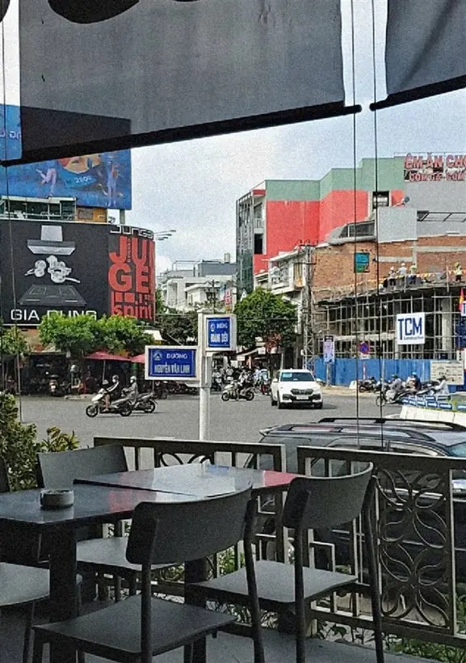
☕ Cà phê Đà NẵngLy sáng ở góc Nguyễn Văn Linh rồi xuống cảng Sa Kỳ đón tàu.
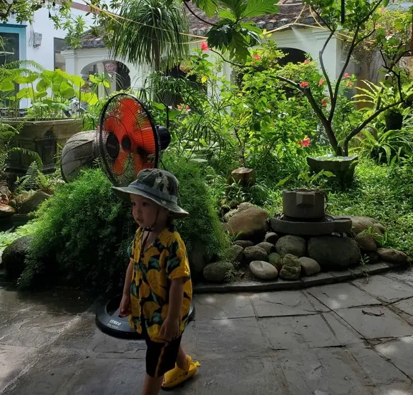
🌿 Đi chill Đà NẵngChuẩn bị về Lý Sơn.
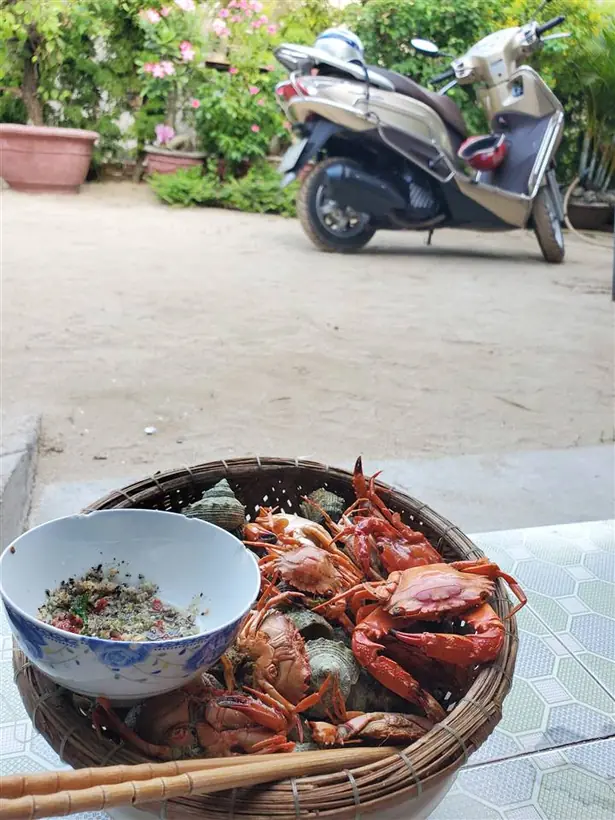
🏡 Về nhà ĐạtSân cát, hoa giấy, rổ hải sản vừa luộc chờ sẵn.
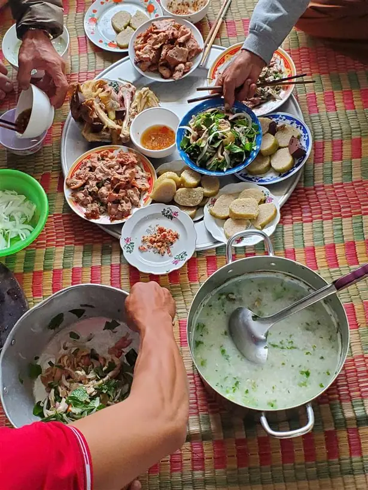
🍽️ Mâm cơm nhà ĐạtGà luộc, gỏi gà trộn hành, cháo gà, chả, nước chấm tỏi đảo.
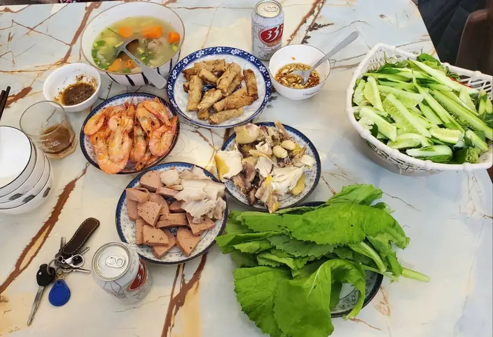
🍤 Tôm, ram, chảCanh rau củ nóng, tôm luộc, ram chiên giòn, gà luộc, chả thái miếng.
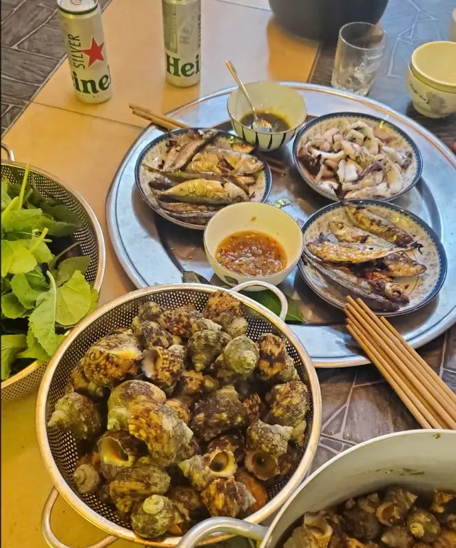
🐚 Ốc luộc, cá nướngRổ ốc nóng hổi, cá nướng, mực và chén nước chấm cay.
📍 Cột cờ Tổ quốcLá cờ trên vách núi, dưới chân là biển.
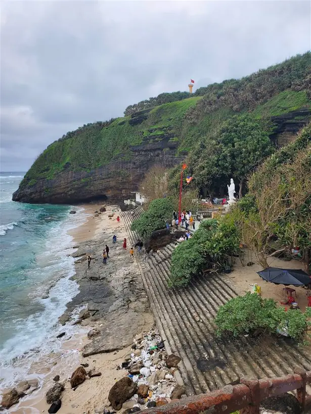
📍 Chùa HangChùa trong hang đá, sóng vỗ ngay bậc thềm.
📍 Hang CâuVách đá xếp lớp như trang sách, cát trắng mịn.
📍 Rạn san hô, Đảo BéNước trong thấy đáy, Đảo Bé nằm phía chân trời.
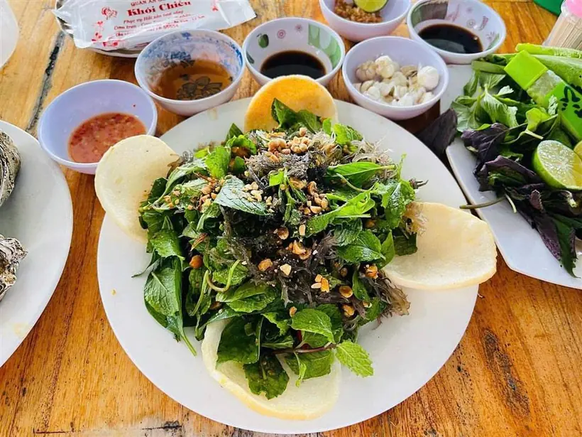
🍽️ Gỏi rong biểnĂn kèm tép tỏi cô đơn sống: cay nồng, ngọt hậu.
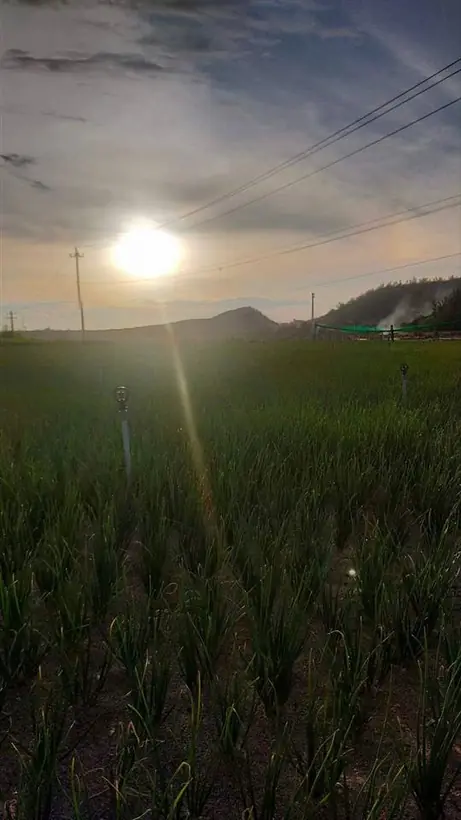
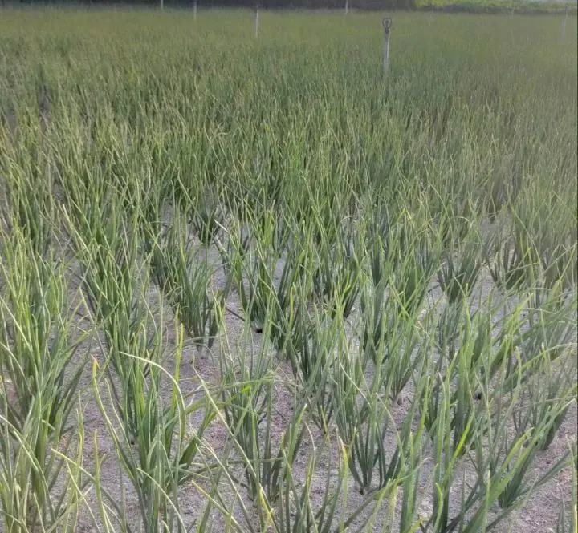
🌇 Hoàng hôn trên ruộngNắng cuối ngày rọi qua những luống xanh.
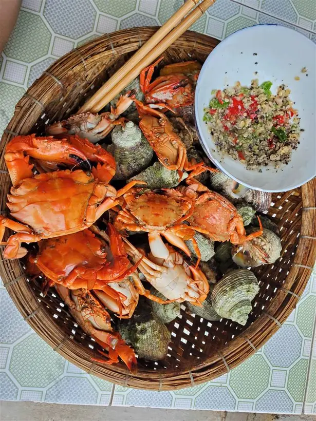
🍽️ Cua, ghẹ, ốc luộcChấm muối tiêu chanh ớt, ăn bằng tay mới ngon.
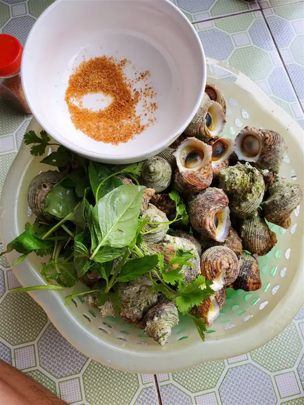
🍽️ Ốc mắt mèoLuộc vừa chín, chấm muối ớt, thêm rau thơm.
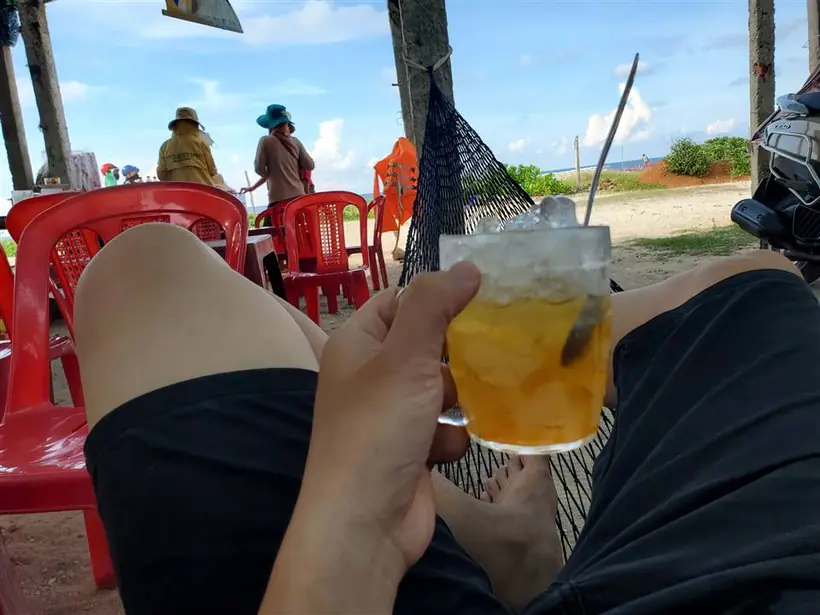
🥤 Quán võng ven biểnLy nước đá mát, gió biển, chẳng muốn đứng dậy.
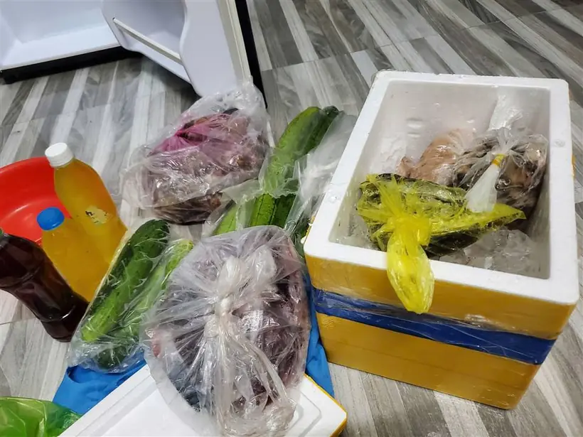
🎁 Thùng quà về bờHải sản ướp đá, dưa leo, nước nhà làm. Hẹn ngày quay lại.
Máy bay hạ cánh, ly cà phê Đà Nẵng còn thơm, cả nhà đã xuống cảng Sa Kỳ đón tàu. Tới nơi, mâm cơm nhà Đạt dọn sẵn. Chiều ra kè biển và chụp tấm đầu tiên ở tường LY SON ISLAND.
Khách tới nhà là dọn cơm trước, chuyện để sau. Chén nước chấm phải có tỏi đảo đập dập.
Bình minh Thới Lới, Cột cờ Tổ quốc, Chùa Hang, Hang Câu. Trưa gỏi rong biển với tỏi cô đơn. Chiều ngắm hoàng hôn trên ruộng. Tối quây quần bên rổ cua ghẹ, ốc mắt mèo, gỏi mực bánh tráng.
Ruộng tỏi phải gánh cát biển phủ lên đất bazan, tưới mỗi ngày. Củ nhỏ mà cay đậm là nhờ đất với gió biển.
Ngồi ghềnh đá nhìn san hô, xa xa Đảo Bé. Xem đua thuyền tứ linh, nằm võng uống ly nước mát. Về đất liền với túi tỏi cô đơn và thùng hải sản ướp đá.
Thuyền tứ linh là Long, Lân, Quy, Phụng. Muốn xem hội thì hỏi lịch trước. Hải sản mang về nhớ ướp đá kín.
🏡 Ghé nhà Đạt
🍲 Ăn món nhà Đạt nấu
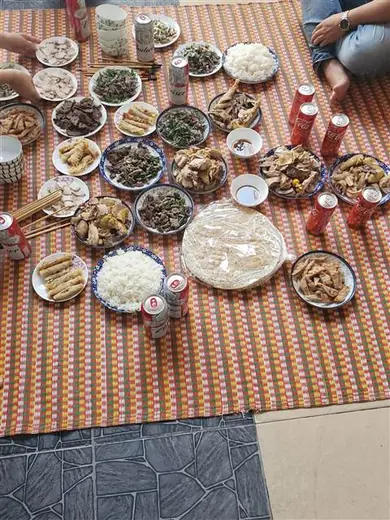
Mâm cỗ đông đủ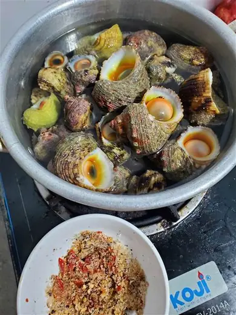
Ốc mắt mèo luộc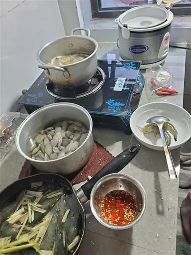
Nghêu, tôm hấp sả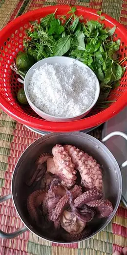
Bạch tuộc luộc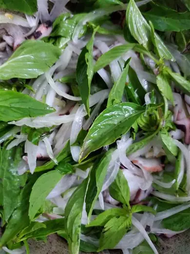
Gỏi hành tây, rau quế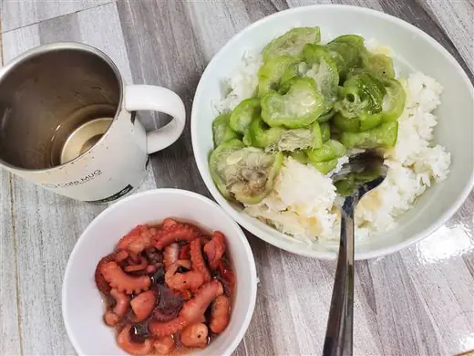
Canh mướp, bạch tuộc rimMón nào cũng có tỏi đảo: đập dập vào nước chấm, phi thơm vào món xào. Hải sản đảo chỉ cần luộc, chấm muối tiêu chanh là ngon.
Thêm những khoảnh khắc trong chuyến đi. Bấm ảnh để xem lớn.
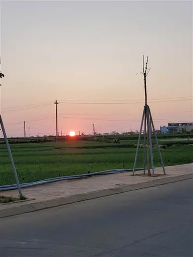
Hoàng hôn trên đồng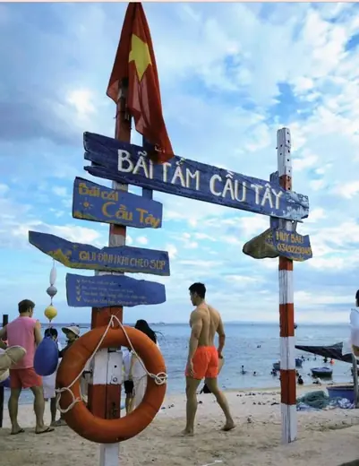
Bãi tắm Cầu Tây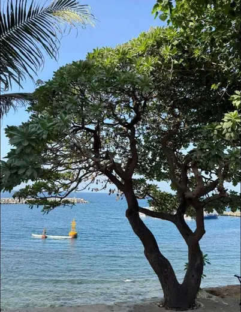
Bóng cây bên biển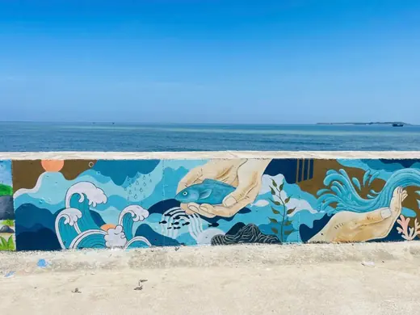
Bích họa giữ biển xanh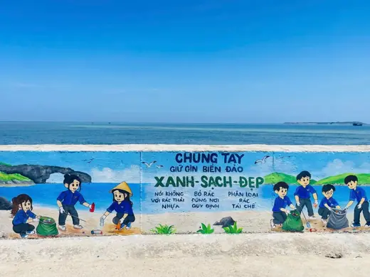
Chung tay xanh, sạch, đẹpẢnh giải chạy (3 ảnh): Hachi8 Media. Các ảnh còn lại: nguồn tham khảo photoflyson và internet, bản quyền thuộc tác giả.
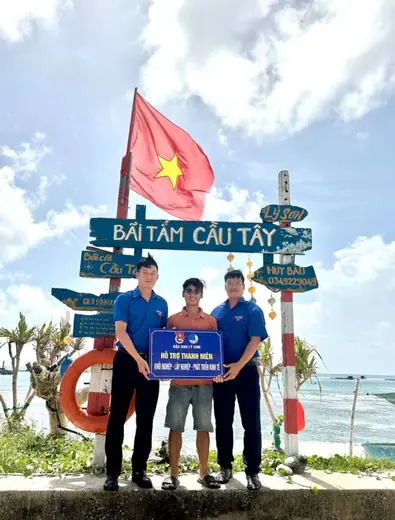
Hỗ trợ thanh niên khởi nghiệpNguồn ảnh: photoflyson, bản quyền thuộc tác giả.
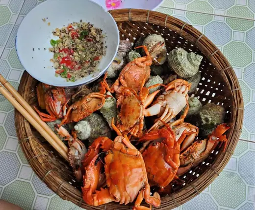
Cua, ốc luộc, chấm muối ớt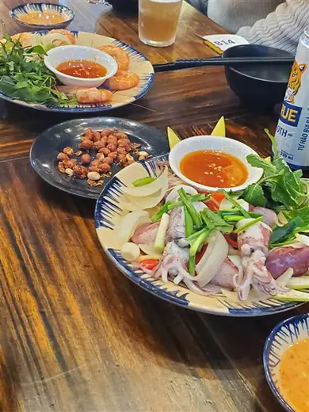
Mực hấp hành, tôm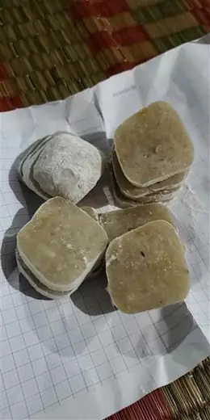
Bánh nhà làm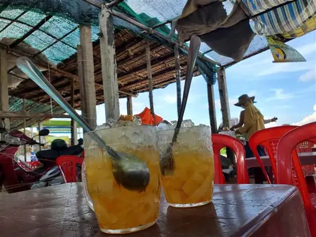
Ly nước mát quán biểnBa ngày ngắn mà đủ: một bình minh trên núi lửa, một bữa cơm nhà, một rổ hải sản vừa luộc. Cảm ơn Đạt đã cho cả nhà mình được làm khách của Lý Sơn.
Lý Sơn là nhà của Đạt, cũng là nhà của khách. Lần sau về, mâm cơm vẫn dọn sẵn. Chưa về được thì Đạt gửi tỏi, hành vào bờ cho cả nhà.
Mang Lý Sơn về nhàHội đua thuyền truyền thống Tứ Linh
Số lần vô địch của từng thuyền qua các mùa đua từ 2007 đến 2026, tính cả giải dịp Tết và giải dịp Lễ.
| Năm | Giải Tết | Giải Lễ |
|---|
Mỗi ô trên thanh là một cúp, ghi năm vô địch, cộng dồn đến năm đang chọn. Dấu – là năm không có trong số liệu. Số liệu tổng hợp từ Bảng Thành Tích của Thông Tin Đảo Lý Sơn.
Nhạc quê hương
Những bài hát về Lý Sơn, Quảng Ngãi, biển đảo và nhạc Tết, phát từ kênh chính thức của ca sĩ, nhạc sĩ. Bấm một bài để nghe, hết bài tự chuyển bài sau.
Bản xem trước trên claude.ai có thể không phát được nhạc. Mở trang web chính (quét mã QR) để nghe đầy đủ.
Mở trang trên điện thoại chưa nghe tiếng? Điện thoại và trình duyệt (Chrome, Safari, Zalo) không cho trang web tự phát nhạc có tiếng khi anh chị chưa chạm vào trang. Nhạc đã tự chạy ở chế độ tắt tiếng, anh chị chạm vào trang một lần hoặc bấm nút 🔇 trên thanh nhạc là có tiếng. Nhớ bật âm lượng điện thoại và tắt chế độ im lặng. Muốn tắt nhạc thì bấm nút dừng.
Nhạc phát qua trình phát YouTube từ kênh chính thức của ca sĩ, nhạc sĩ. Bản quyền thuộc tác giả và đơn vị phát hành. Trang không lưu hay tải file nhạc.
Hỏi đáp
Có. Hàng gửi toàn quốc qua bưu điện hoặc dịch vụ chuyển phát. Phí gửi tùy nơi nhận và khối lượng, người bán báo khi xác nhận đơn.
Có. Anh chị được mở xem hàng khi nhận, thấy đúng hàng rồi mới trả tiền.
Trong mẫu đặt hàng, nhập địa chỉ rồi bấm "Xem địa chỉ trên bản đồ" để kiểm tra, hoặc bấm "Dùng vị trí hiện tại" khi đang ở nhà. Đơn sẽ kèm link Google Maps để người giao hàng tìm đường.
Tỏi bị mốc, hỏng hoặc gửi sai hàng thì được đổi. Anh chị chụp ảnh hàng lúc nhận và nhắn Zalo 0363 594 167.
Giá tỏi và hành thay đổi theo vụ và sản lượng từng đợt. Nhắn Zalo để được báo giá đúng đợt hàng đang có.
Hàng nhà trồng và làm trên đảo Lý Sơn, gửi về đất liền theo từng đợt thu hoạch.
Không. Đó là những cây tỏi thường chỉ tạo một tép, được nhặt riêng khi thu hoạch nên số lượng ít.
Đến cảng Sa Kỳ (Quảng Ngãi) rồi đi tàu cao tốc ra đảo, khoảng 30–60 phút tùy loại tàu và thời tiết. Tàu thường chạy ban ngày, dịp lễ và cuối tuần nên đặt vé trước.
Mang CCCD, hộ chiếu hoặc giấy tờ tùy thân hợp lệ. Trẻ em nên mang giấy khai sinh. Có mặt ở cảng trước giờ tàu khoảng 30 phút.
Khoảng tháng 4 đến tháng 8: ít mưa, biển êm hơn. Tháng 9 đến tháng 2 năm sau là mùa mưa bão, biển hay động, tàu có thể tạm ngưng.
Điện thoại không cho trang tự phát có tiếng. Chạm vào trang một lần hoặc bấm nút 🔇 để nghe nhạc.
Nhạc quê hươngLý Sơn, Vùng Đất Trồng Tỏi · Chu Du